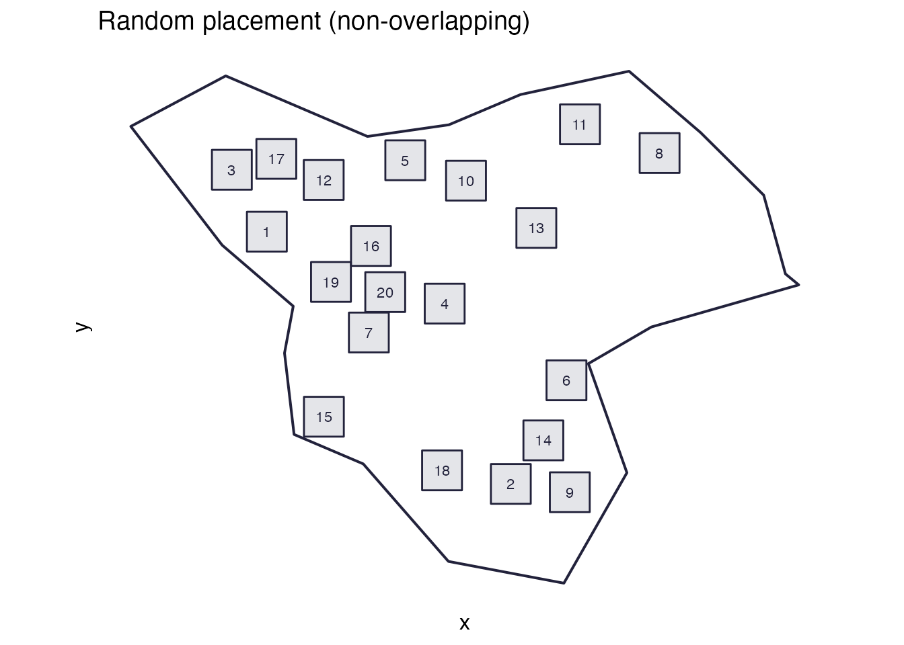
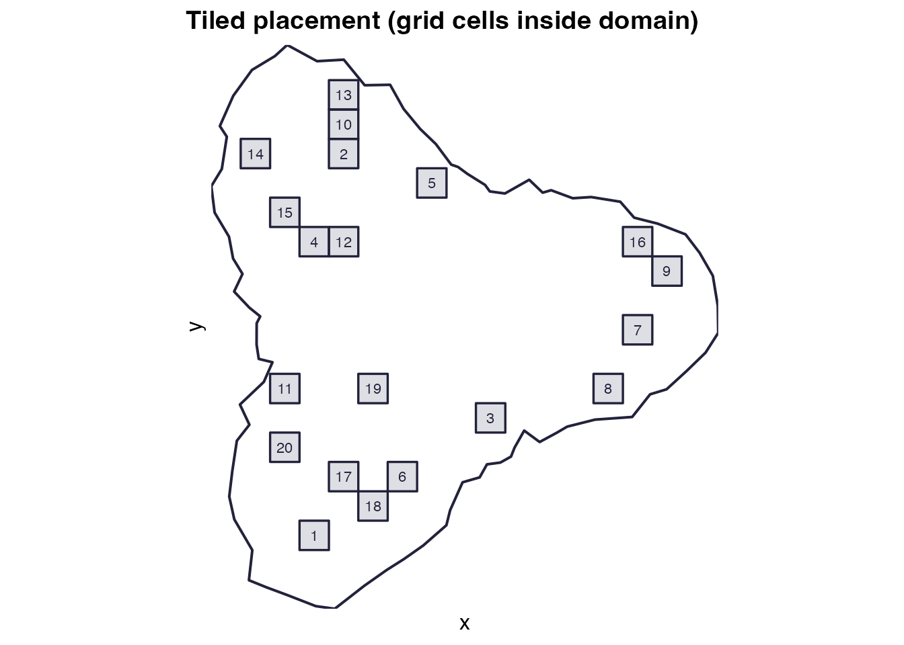
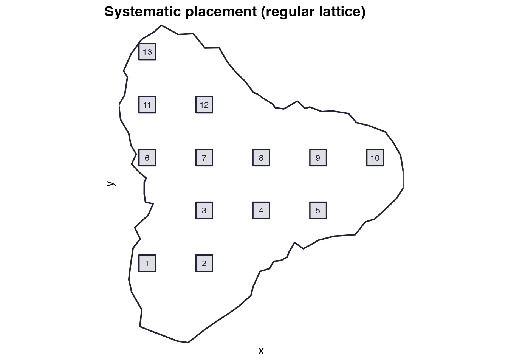
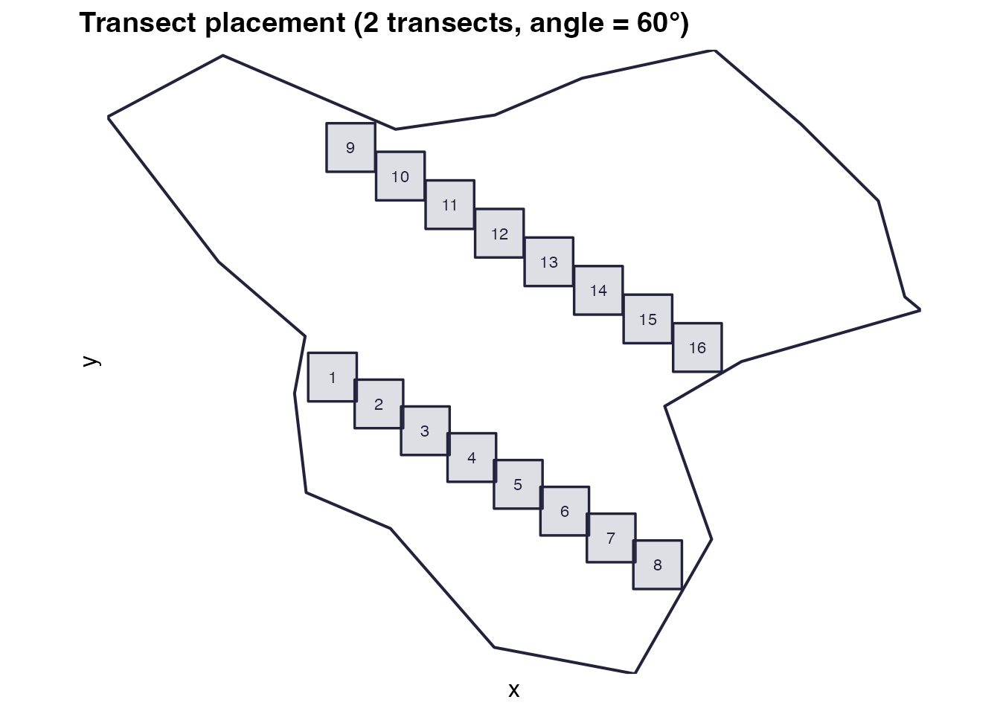
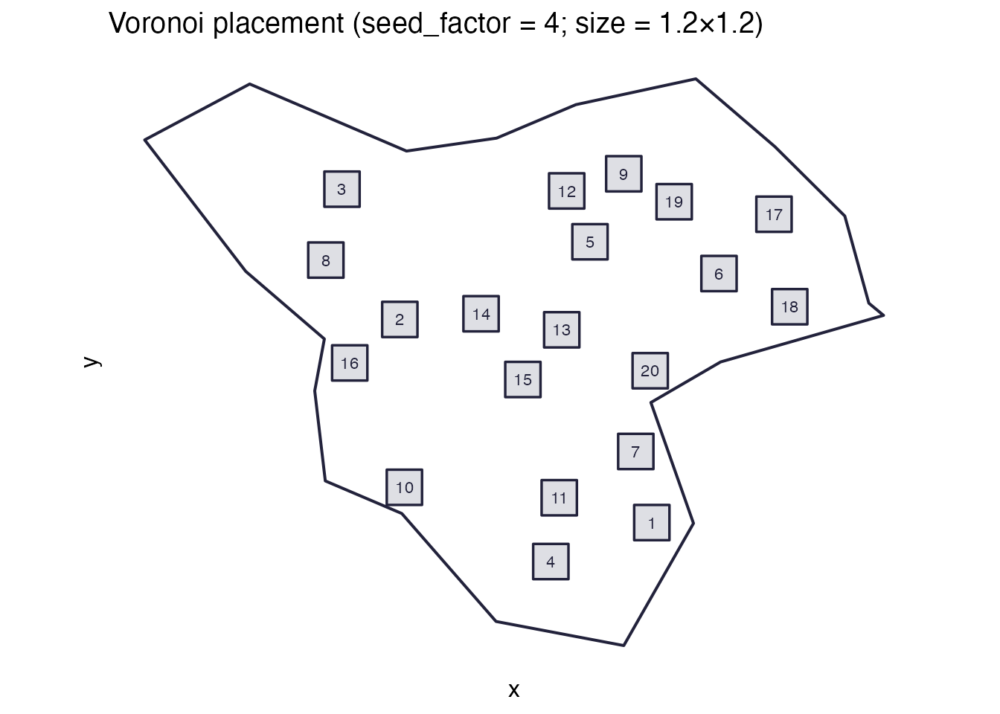
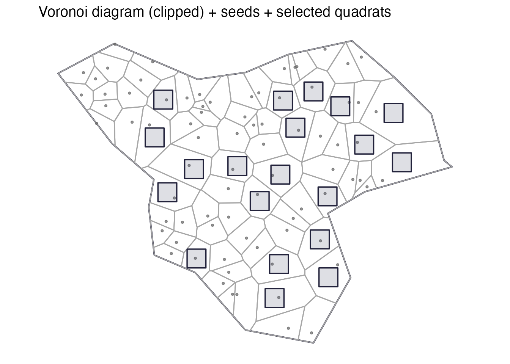

Quadrat placement schemes in spesim
Source:vignettes/spesim-quadrat-placement.Rmd
spesim-quadrat-placement.RmdThis vignette shows the five quadrat placement schemes available in spesim, with reproducible code and simple visualisations for each:
-
random→ [place_quadrats()] -
tiled→ [place_quadrats_tiled()] -
systematic→ [place_quadrats_systematic()] -
transect→ [place_quadrats_transect()] -
voronoi→ [place_quadrats_voronoi()]
All schemes place axis-aligned rectangular quadrats (i.e., not rotated). Each function attempts to ensure quadrats lie fully within the sampling domain; specific constraints differ by scheme.
Setup: a shared irregular domain
library(spesim)
#> spesim loaded - try run_spatial_simulation() to generate a simulation.
library(sf)
#> Linking to GEOS 3.13.0, GDAL 3.8.5, PROJ 9.5.1; sf_use_s2() is TRUE
library(ggplot2)
set.seed(1)
domain <- create_sampling_domain()
# Quadrat size is given in the domain's coordinate units.
# The default domain is synthetic and uses an arbitrary planar scale.
quadrat_size <- c(1.5, 1.5)A small helper to plot the domain + quadrats consistently:
plot_quadrats <- function(domain, quadrats, title) {
ggplot() +
geom_sf(data = domain, fill = NA, colour = "#22223b", linewidth = 0.7) +
geom_sf(data = quadrats, fill = "#4a4e69", alpha = 0.15, colour = "#22223b", linewidth = 0.5) +
geom_sf_text(
data = suppressWarnings(sf::st_centroid(quadrats)),
aes(label = quadrat_id),
size = 3,
colour = "#22223b"
) +
coord_sf(datum = NA) +
labs(title = title) +
theme_minimal(base_size = 12) +
theme(panel.grid.major = element_blank(), panel.grid.minor = element_blank())
}1) Random (non-overlapping) placement
Use when: you want simple random sampling and you don’t want quadrats overlapping.
Mechanics: rejection sampling of random centres (uniform over a shrunk bounding box), accepting only quadrats that are fully inside the domain and do not overlap already accepted quadrats.
set.seed(2)
q_random <- place_quadrats(domain, n_quadrats = 20, quadrat_size = quadrat_size)
plot_quadrats(domain, q_random, "Random placement (non-overlapping)")
Notes:
- If the domain is small or the quadrats are large, you may get fewer quadrats than requested (with a warning).
- This is often a good default for teaching.
2) Tiled placement
Use when: you want quadrats drawn from a regular tiling, with strict non-overlap.
Mechanics: a regular grid of cells
(st_make_grid) at the quadrat size is created; tiles fully
inside the domain are candidates; n_quadrats are sampled
from these candidates.
set.seed(3)
q_tiled <- place_quadrats_tiled(domain, n_quadrats = 20, quadrat_size = quadrat_size)
plot_quadrats(domain, q_tiled, "Tiled placement (grid cells inside domain)")
Notes:
- Returned quadrats never overlap.
- If the domain has narrow “necks”, many grid cells may be excluded.
3) Systematic placement
Use when: you want a regular lattice of quadrats (systematic sampling).
Mechanics: centres are placed on an
nx × ny grid spanning the domain bounding box; quadrats
centred on those points are retained only if they fit entirely in the
domain.
set.seed(4)
q_systematic <- place_quadrats_systematic(domain, n_quadrats = 25, quadrat_size = quadrat_size)
plot_quadrats(domain, q_systematic, "Systematic placement (regular lattice)")
Notes:
- The actual number returned may differ from
n_quadratsbecause the grid is filtered by the domain boundary. - Quadrats may overlap if the grid spacing is smaller than the quadrat size (this depends on the inferred grid density).
4) Transect placement
Use when: you want transect-based sampling (parallel lines across the domain) with evenly spaced quadrats along each transect.
Mechanics: n_transects parallel lines
are created across a safe area (domain shrunk by half the
quadrat diagonal). Along each transect segment,
n_quadrats_per_transect quadrats are placed.
set.seed(5)
q_transect <- place_quadrats_transect(
domain,
n_transects = 2,
n_quadrats_per_transect = 8,
quadrat_size = quadrat_size,
angle = 60
)
plot_quadrats(domain, q_transect, "Transect placement (2 transects, angle = 60°)")
Notes:
- The quadrats themselves remain axis-aligned, even if transects run at an angle.
- If the safe area becomes too small (large quadrats, narrow domain), few or no quadrats may be returned.
5) Voronoi-based placement
Use when: you want sampling locations that are well-spaced in complex domains.
Mechanics: a dense set of random seed points are placed in the domain; a Voronoi tessellation is computed; cells are screened for whether they can contain the quadrat (based on an inscribed circle heuristic). Quadrats are placed at cell centres.
set.seed(6)
# Note: very large voronoi_seed_factor values tend to create many small cells,
# which can make it impossible to fit larger quadrats. If you get an empty
# result, either reduce `voronoi_seed_factor` or use a smaller quadrat_size.
q_voronoi <- place_quadrats_voronoi(
domain,
n_quadrats = 20,
quadrat_size = c(1.2, 1.2),
voronoi_seed_factor = 4,
show_voronoi = TRUE
)
#> Warning in st_collection_extract.sfc(voronoi_geom, "POLYGON"): x is already of
#> type POLYGON.
# Standard view (domain + quadrats)
plot_quadrats(domain, q_voronoi, "Voronoi placement (seed_factor = 4; size = 1.2×1.2)")
# Optional: show the underlying Voronoi tessellation used to select candidates
vor_cells <- attr(q_voronoi, "voronoi_cells")
seeds <- attr(q_voronoi, "voronoi_seeds")
p_voronoi_diag <- ggplot() +
geom_sf(data = domain, fill = NA, colour = "#22223b", linewidth = 0.7) +
geom_sf(data = vor_cells, fill = NA, colour = "grey65", linewidth = 0.5) +
geom_sf(data = sf::st_as_sf(seeds), colour = "grey40", alpha = 0.7, size = 0.8) +
geom_sf(data = q_voronoi, fill = "#4a4e69", alpha = 0.18, colour = "#22223b", linewidth = 0.6) +
coord_sf(datum = NA) +
labs(title = "Voronoi diagram (clipped) + seeds + selected quadrats") +
theme_minimal(base_size = 12) +
theme(panel.grid.major = element_blank(), panel.grid.minor = element_blank())
print(p_voronoi_diag)
Notes:
- For narrow or very irregular domains, increase
voronoi_seed_factor(at a computational cost). - The current implementation focuses on finding feasible, nicely spaced sites; it is not designed to guarantee strict non-overlap in all cases (though overlap is uncommon for moderate sizes).
Summary: when to use which
- Random: general-purpose, classic random sampling, non-overlapping.
- Tiled: systematic grid cells; great for “choose random cells from a tiling”.
- Systematic: classic lattice-based systematic sampling.
- Transect: teaching/field designs with transects.
- Voronoi: irregular domains where you want good spatial coverage and spacing.